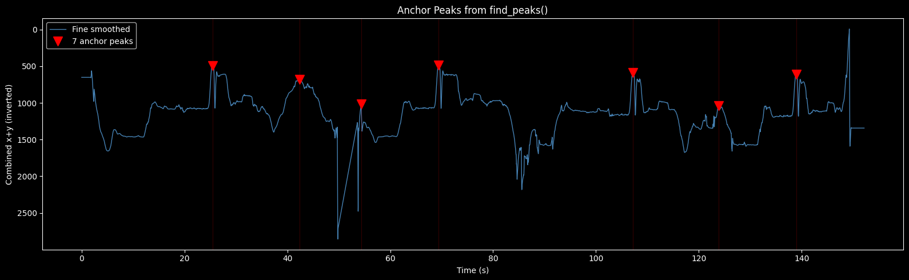
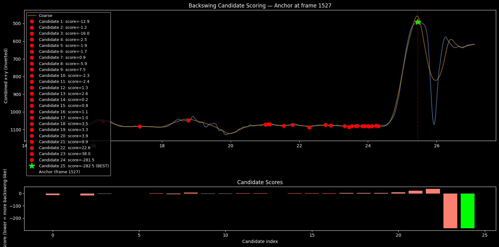
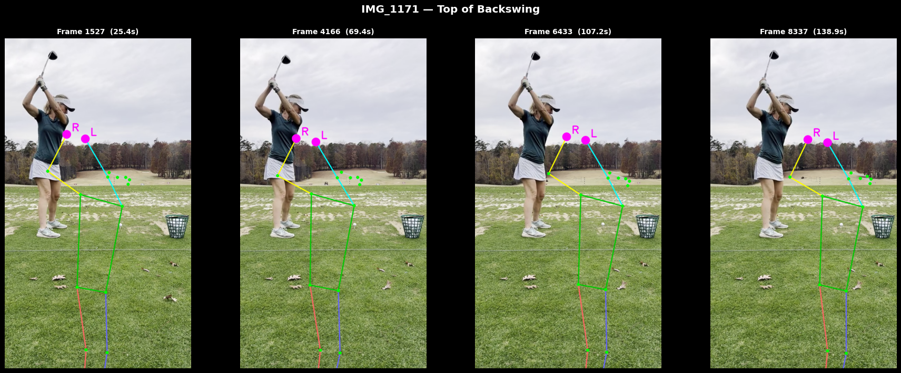

Using wrist keypoints from mmpose and some signal processing to automatically find the top of backswing and contact in golf videos.
Signal Processing
Pose Estimation
Automated Annotation
Author
Ali Zaidi
Published
February 6, 2026
The Problem
I’ve got a bunch of long golf videos where each one has 5–10 swings mixed in with walking, setup, chatting, etc. I need to know exactly which frames are the top of backswing and contact for each swing — manually annotating this across dozens of videos is brutal and inconsistent.
Turns out you can get surprisingly far with just wrist positions and a Savitzky-Golay filter. No ML, no GPU, no training data.
Show code
import sys, os, pickleimport numpy as npimport cv2import matplotlib%matplotlib inlineimport matplotlib.pyplot as pltplt.style.use("dark_background")from scipy.signal import savgol_filter, find_peaksfrom IPython.display import display, Image as IPImage# make end2end importable — add this post's directory to sys.pathPOST_DIR = os.path.dirname(os.path.abspath("index.qmd"))if POST_DIR not in sys.path: sys.path.insert(0, POST_DIR)from end2end.config import Config, DetectionResultfrom end2end.pipeline import detect_backswings, detect_contactsfrom end2end.io import load_wrist_signals as _load_wrist_signalsfrom end2end.signal import interp_low_conf as _interp_low_conffrom end2end.peaks import detect_peaks as _detect_peaks, backswing_score as _backswing_scorefrom end2end.filters import run_all as _filter_peaksfrom end2end.visualize import draw_skeletoncfg = Config()
Data: mmpose Keypoints at 60fps
Each video has been run through mmpose to get a COCO-17 skeleton per frame — 17 joints with (x, y) and confidence scores. We really only need two: the left wrist (index 9) and right wrist (index 10).
Show code
# Pick one video to walk through --- IMG_1171 has 5 clean swingsDATASET = os.path.join(POST_DIR, "data", "saugusta")VID_NAME ="IMG_1171"PKL_PATH = os.path.join(DATASET, VID_NAME, "keypoints", VID_NAME +".pkl")MOV_PATH = os.path.join(DATASET, VID_NAME +".mp4")x_l, x_r, y_l, y_r, c_l, c_r, pkl_data = _load_wrist_signals(PKL_PATH, cfg)n_frames =len(x_l)cap = cv2.VideoCapture(MOV_PATH)fps = cap.get(cv2.CAP_PROP_FPS)total_frames =int(cap.get(cv2.CAP_PROP_FRAME_COUNT))cap.release()print(f"{VID_NAME}: {n_frames} keypoint frames, {total_frames} video frames, {fps:.1f} fps")print(f"Duration: {total_frames / fps:.1f}s")
Here’s the key insight: at the top of the backswing the hands are high and behind the golfer, so both x and y values are low. At contact/follow-through the hands are extended forward and down — x and y are high.
If we just average the left and right wrist positions and sum x+y, we get a single number per frame that dips at every backswing and peaks at every contact. That’s the whole signal the pipeline operates on.
Raw wrist x and y coordinates. Each dip in x and y together corresponds to a backswing.
The combined signal (bottom panel, y-axis inverted so peaks = backswings) already shows clear dips at each swing. But it’s noisy — mmpose drops confidence on some frames and the raw signal is too jittery for reliable peak detection.
Step 1: Interpolate Low-Confidence Frames
Before smoothing, we replace frames where mmpose had low confidence (< 0.3) with linearly interpolated values from the neighbors. Gets rid of the worst spikes without distorting the actual trajectory.
Effect of confidence-based interpolation on the combined signal.
Step 2: Two-Pass Smoothing
We smooth at two different scales using Savitzky-Golay filters, and each one has a specific job:
Filter
Window
Real-world span
Purpose
Fine
9 frames
~150ms
Remove frame-to-frame jitter while preserving the exact shape of each swing
Coarse
61 frames
~1.0s
Flatten within-swing oscillations to find candidate regions for backswing search
Why 61 for coarse? A swing is 2–3 seconds. Smoothing over ~1 second is wide enough to eliminate the fast downswing/contact spike within a single swing cycle, leaving just the slow envelope that marks where swings happen. It’s deliberately too wide to pinpoint the exact apex — we handle that later.
Fine (150ms) vs. coarse (1s) Savitzky-Golay smoothing. The coarse curve identifies swing regions; the fine curve preserves the exact peak shape.
The coarse curve (orange) rounds off the sharp peaks — that’s by design. The fine curve (blue) tracks the actual apex much more faithfully. We use coarse for finding swings and fine for locating them precisely.
Step 3: Peak Detection
We flip the fine-smoothed signal and run scipy.signal.find_peaks to find local maxima (= backswing tops in the original signal).
Parameter
Value
Meaning
peak_prominence
300 px
A swing must produce at least a 300-pixel dip in the combined signal
peak_distance
500 frames (~8.3s)
Two peaks must be at least 8 seconds apart
These are intentionally generous — we’d rather over-detect here and let the filters clean up later.
Show code
neg =-smoothed_fine.copy()# End-of-video masking: suppress the last 5% of framesmask_start =int(total_frames *0.95)if mask_start <len(neg): neg[mask_start:] = np.min(neg)anchors, props = find_peaks(neg, prominence=cfg.peak_prominence, distance=cfg.peak_distance)fig, ax = plt.subplots(figsize=(16, 5))ax.plot(t, smoothed_fine, color="steelblue", linewidth=1.0, label="Fine smoothed")ax.invert_yaxis()iflen(anchors) >0: ax.plot(anchors / fps, smoothed_fine[anchors], "rv", markersize=12, label=f"{len(anchors)} anchor peaks")for a in anchors: ax.axvline(a / fps, color="red", alpha=0.2, linewidth=0.8)ax.set_xlabel("Time (s)")ax.set_ylabel("Combined x+y (inverted)")ax.set_title("Anchor Peaks from find_peaks()")ax.legend()fig.tight_layout()display(fig); plt.close(fig)

Initial peak detection on the inverted signal. These are anchor points — the coarse search will refine them.
Step 4: Backswing Scoring
The peaks from find_peaks land in the right neighborhood but sometimes on the follow-through instead of the backswing (both have low x+y). For each anchor, we search backward up to 600 frames (~10s) on the coarse signal for candidate local minima, then score each one:
The idea: a real backswing has a smooth approach (slowly raising the club) and a sharp departure (the fast downswing). Follow-throughs have it backwards — sharp approach, slow departure. Lowest score wins.
Show code
# Show scoring for the first anchoriflen(anchors) >0: anchor = anchors[0] ss =max(0, anchor - cfg.search_back) d = np.diff(smoothed_coarse[ss:anchor +1]) candidates = [ss + i +1for i inrange(len(d) -1) if d[i] <=0and d[i +1] >0]if anchor notin candidates: candidates.append(anchor) scores = [_backswing_score(c, smoothed_fine, cfg) for c in candidates] best_idx = np.argmin(scores) best = candidates[best_idx] fig, (ax1, ax2) = plt.subplots(2, 1, figsize=(16, 8), gridspec_kw={"height_ratios": [3, 1]})# Signal with candidates region =slice(max(0, ss -50), min(len(smoothed_fine), anchor +100)) t_region = np.arange(region.start, region.stop) / fps ax1.plot(t_region, smoothed_fine[region], color="steelblue", linewidth=1.2) ax1.plot(t_region, smoothed_coarse[region], color="orange", linewidth=1.5, alpha=0.6, label="Coarse")for i, c inenumerate(candidates): color ="lime"if i == best_idx else"red" marker ="*"if i == best_idx else"o" size =15if i == best_idx else8 ax1.plot(c / fps, smoothed_fine[c], marker, color=color, markersize=size, label=f"Candidate {i+1}: score={scores[i]:.1f}"+ (" (BEST)"if i == best_idx else"")) ax1.axvline(anchor / fps, color="red", alpha=0.3, linestyle="--", label=f"Anchor (frame {anchor})") ax1.invert_yaxis() ax1.set_ylabel("Combined x+y (inverted)") ax1.set_title(f"Backswing Candidate Scoring — Anchor at frame {anchor}") ax1.legend(fontsize=9)# Score bar chart ax2.bar(range(len(scores)), scores, color=["lime"if i == best_idx else"salmon"for i inrange(len(scores))]) ax2.set_xlabel("Candidate index") ax2.set_ylabel("Score (lower = more backswing-like)") ax2.set_title("Candidate Scores") fig.tight_layout() display(fig); plt.close(fig)

Backswing scoring for one anchor: the true backswing (green) has a smooth approach and sharp departure, while a follow-through candidate would score higher.
Step 5: Apex Refinement
The coarse search gets the right swing, but the wide smoothing flattens the peak by ~10 frames — the candidate lands on the rising slope before the true apex.
Easy fix: from the best candidate, search forward up to 15 frames (~250ms) on the fine-smoothed signal for the actual minimum.
Apex refinement: the coarse candidate (red) lands early; the refinement step (green) finds the true minimum within 15 frames.
15 frames at 60fps is ~250ms — way too short to jump to the next swing’s follow-through, but enough to correct the ~10 frame bias from coarse smoothing.
Step 6: Filter Pipeline
After detection, five filters run in sequence to clean up false positives:
Show code
result = detect_backswings(PKL_PATH, MOV_PATH, config=cfg)print(f"{result.name}: {result.n_swings} swings detected")for msg in result.filter_log:print(f" {msg}")
Dedup — merge when two anchors converge to the same frame
End-of-video trim — drop peaks in the last 3% of frames (camera noise, golfer walking away)
Too-close merge — if two peaks are within 600 frames (~10s), keep the deeper one
MAD outlier removal — compute the median absolute deviation of x+y values at all peaks; remove any peak more than 3 MADs above median. A floor of 50 prevents this from getting unreasonably tight when all swings are very consistent
Follow-through rejection — check horizontal offset of wrists vs. shoulders. Real backswings have hands behind the body (negative offset); follow-throughs have hands in front (positive). Remove peaks with offset more than 3 MADs above median.
Final detected backswing tops overlaid on the smoothed signal.
Visualizing the Detections
For each detected frame we pull the actual video frame and overlay the COCO-17 skeleton with wrists highlighted — quick sanity check that we landed on the right moment.
Show code
from end2end.visualize import make_gridgrid_path = make_grid( result.peak_frames, result.pkl_data, result.mov_path, result.fps,f"{result.name} — Top of Backswing", os.path.join(out_dir, f"{result.name}_backswing_grid.png"),)if grid_path: display(IPImage(filename=grid_path))

Skeleton overlay at each detected backswing top. Wrists (magenta) should be high and behind the head.
Contact Detection
Once we have the backswing tops, finding contact is straightforward: for each backswing frame, search forward 10–90 frames (~170ms to 1.5s) for the maximum of a tightly smoothed signal (window=5, ~83ms). That’s where the hands are fully extended — club meeting ball.
Skeleton overlay at contact points. Wrists should be low and forward — the moment of impact.
Parameter Reference
All parameters live in a single frozen dataclass (Config) with defaults tuned on two datasets (7 + 10 videos, 92 total swings):
Show code
import pandas as pdparams = [ ("savgol_window", cfg.savgol_window, f"~{cfg.savgol_window/fps*1000:.0f}ms", "Fine smoothing — removes jitter, preserves swing shape"), ("savgol_poly", cfg.savgol_poly, "—", "Polynomial order for fine Savitzky-Golay"), ("coarse_window", cfg.coarse_window, f"~{cfg.coarse_window/fps*1000:.0f}ms", "Coarse smoothing — finds swing regions, too wide for exact apex"), ("peak_prominence", cfg.peak_prominence, "300 px", "Minimum signal dip to count as a swing"), ("peak_distance", cfg.peak_distance, f"~{cfg.peak_distance/fps:.1f}s", "Minimum gap between find_peaks detections"), ("search_back", cfg.search_back, f"~{cfg.search_back/fps:.1f}s", "How far back from anchor to search for the true backswing"), ("refine_window", cfg.refine_window, f"~{cfg.refine_window/fps*1000:.0f}ms", "Forward search on fine signal to correct coarse bias"), ("min_swing_gap", cfg.min_swing_gap, f"~{cfg.min_swing_gap/fps:.1f}s", "Merge threshold for too-close peaks"), ("end_of_video_pct", cfg.end_of_video_pct, f"Last {cfg.end_of_video_pct*100:.0f}%", "Suppress peaks in final frames (noise from camera stop)"), ("xy_outlier_mad_floor", cfg.xy_outlier_mad_floor, "50 px", "Prevents MAD threshold from being too tight when swings are consistent"), ("contact_search_min/max", f"{cfg.contact_search_min}–{cfg.contact_search_max}",f"~{cfg.contact_search_min/fps*1000:.0f}–{cfg.contact_search_max/fps*1000:.0f}ms","Window after backswing to search for impact"),]df = pd.DataFrame(params, columns=["Parameter", "Value", "Physical meaning", "Purpose"])df.style.hide(axis="index")
Parameter
Value
Physical meaning
Purpose
savgol_window
9
~150ms
Fine smoothing — removes jitter, preserves swing shape
savgol_poly
3
—
Polynomial order for fine Savitzky-Golay
coarse_window
61
~1017ms
Coarse smoothing — finds swing regions, too wide for exact apex
peak_prominence
300
300 px
Minimum signal dip to count as a swing
peak_distance
500
~8.3s
Minimum gap between find_peaks detections
search_back
600
~10.0s
How far back from anchor to search for the true backswing
refine_window
15
~250ms
Forward search on fine signal to correct coarse bias
min_swing_gap
600
~10.0s
Merge threshold for too-close peaks
end_of_video_pct
0.030000
Last 3%
Suppress peaks in final frames (noise from camera stop)
xy_outlier_mad_floor
50
50 px
Prevents MAD threshold from being too tight when swings are consistent
contact_search_min/max
10–90
~167–1500ms
Window after backswing to search for impact
Running on a Full Dataset
The batch runner auto-discovers videos and produces per-video grids, signal plots, optional clips, and a problems report:
# Run detection across all saugusta videos to show aggregate resultsfrom end2end.pipeline import detect_backswings, detect_contactsfrom end2end.run_batch import discover_videosvideos = discover_videos(DATASET)all_results = []for name, paths in videos.items(): r = detect_backswings(paths["pkl"], paths["mov"], config=cfg) all_results.append(r)total = sum(r.n_swings for r in all_results)print(f"Dataset: saugusta — {len(all_results)} videos, {total} total swings\n")for r in all_results: filters = [m.split(":")[0] for m in r.filter_log] line = f" {r.name}: {r.n_swings} swings" if filters: line += f" [{', '.join(filters)}]" print(line)
What Can Go Wrong
The pipeline gets 92/92 detections with zero false positives, but only after fixing three subtle failure modes.
MAD Floor — When Consistency Kills
When all swings in a video have very similar x+y values (MAD of 14–19 pixels), the outlier threshold median + 3 * MAD becomes absurdly tight. Valid swings that are barely above it get rejected.
Fix:max(mad, 50) before computing the threshold — a floor that prevents the filter from being too discriminating.
End-of-Video Noise
The last few percent of a video often has the golfer walking away or the camera shutting off. These frames produce spurious peaks that suppress nearby real peaks via find_peaks’s distance parameter.
Fix: Before calling find_peaks, set the last 3% of the inverted signal to its global minimum. Zero-costs the noise region without touching any real swing.
Coarse Smoothing Bias
The coarse Savitzky-Golay filter (window=61) flattens peaks by ~10 frames. The scoring function then prefers the early (wrong) candidate because the remaining rise looks like a “sharp departure.”
Fix: 15-frame forward refinement on the fine-smoothed signal after scoring. Safe because 15 frames (~250ms) is way too short to reach the follow-through.
Summary
The full pipeline:
Raw wrist keypoints (x, y per frame)
→ Interpolate low-confidence frames
→ Combined signal: (x_L + x_R)/2 + (y_L + y_R)/2
→ Fine smooth (9 frames / 150ms) + Coarse smooth (61 frames / 1.0s)
→ find_peaks on inverted signal (anchors)
→ Backward search on coarse signal (candidate regions)
→ Backswing scoring (smooth approach + sharp departure)
→ Apex refinement (+15 frames on fine signal)
→ Five-stage filtering (dedup, end-trim, merge, MAD, follow-through)
→ Contact search (forward 10-90 frames for max)
~570 lines of Python. Just wrist positions and a Savitzky-Golay filter.